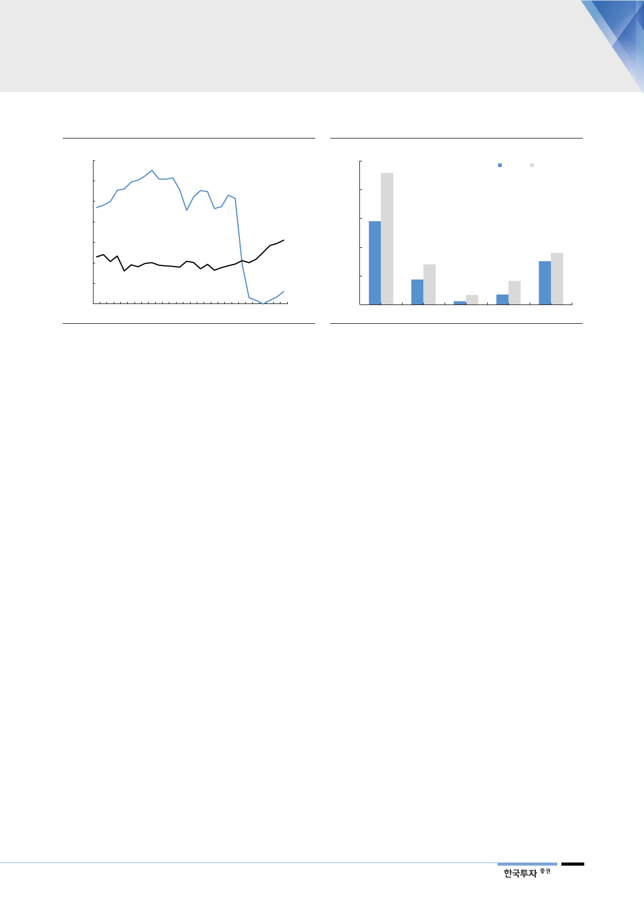

[그림 14] 일본은 2011년 이후 원전 비중 줄이는 대신
(%)
35
일본 발전량 비중
30
25
20
재생
15
에너지
10
5
원자력
0
90 92 94 96 98 00 02 04 06 08 10 12 14 16
자료: IEA, 한국투자증권
[그림 15] 태양광 등 재생에너지 육성 중
(%)
25
일본 재생에너지 발전량 비중 전망
2016 2030F
20
15
10
5
0
재생에너지 태양광
자료: 일본 자원에너지청, 한국투자증권
풍력
바이오
수력
우리나라에서도
입지 좁아진 원전
우리나라 역시 경제 논리에 치우친 에너지 정책에 대해 자성의 목소리가 커지고
있다. 과거 정부는 발전연료비 관점에서 가장 저렴한 원자력발전을 키워왔다. 그
러나 2016년 경주 지진을 겪으면서 원전의 잠재적 위험성에 대한 경각심이 커졌
다. 특히 지리적으로 원전이 밀집해 있는 점은 큰 불안요인이다. 또한 이제는 고
리 1호기의 가동정지에 따라 그 동안 과소평가해온 사후처리비용을 걱정해야 하
는 시기가 도래했다. 이러한 흐름 속에 비록 강제성은 부족해 보이지만, 작년 3월
전기사업법 개정은 전력수급계획과 전력거래에 있어 경제성과 함께 환경 및 안전
에 미치는 영향을 종합적으로 검토할 것을 의무화했다.
탈원전은 전력시장의
패러다임 변화를 예고
정부의 탈원전·탈석탄 선언은 이렇게 달라진 에너지 수급환경에서 이제는 단기
적인 경제성만으로 기저발전에 대한 의존도를 고수하기 어려움을 강조한 것이다.
작년 9월 원자력안전위원회가 모든 원전에 대한 안전성 특별점검을 시행한 이후
정비강화에 따른 비용부담과 가동률 하락으로 이미 원전의 경제성에 대한 기대치
는 낮아지고 있다. 지난 6월에는 월성 1호기에 대한 조기 폐로를 결정했다. 나아
가 정부는 노후화된 원전의 연장을 불허할 방침이며 신규 원전 6기에 대한 사업
역시 백지화하기로 했다.
원자력 발전설비 비중
2030년 12%로 줄일 계획
8차 전력수급기본계획에서도 국민안전과 환경에 대한 고민이 드러난다. 정부는
2017년 10월 에너지전환로드맵에서 제시했던 대로 원전의 단계적 감축과 재생
에너지 확대를 전원구성 계획의 기본방향으로 설정했다. 원전의 발전설비는
2022년을 피크로 노후 원전의 폐로 스케줄과 맞물려 감소세에 접어들 것이다.
올해 24기 22.5GW 규모는 2030년 19기, 20.4GW로 줄어들 전망이다. 이를 통
해 정부는 원자력 설비비중을 현재 20%에서 2030년 12%로 낮출 계획이다.
9